Kraków
KMK — Kraków Public Transport · WST Wieliczka
197 lines · 3,598 stops · 5,685 km
174 bus
23 tram
Open the map →
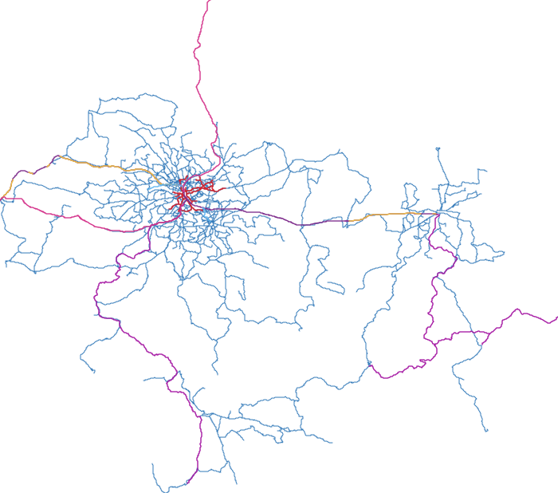
Kraków + MLD
KMK Kraków · Małopolskie Linie Dowozowe (Koleje Małopolskie) · WST Wieliczka
264 lines · 7,599 stops · 11,319 km — the Kraków sheet grown to all of Małopolska: the feeder buses of every railway station, Olkusz to Tarnów, Podhale to Poprad
241 bus
23 tram
Open the map →

Poznań
ZTM Poznań
192 lines · 3,060 stops
173 bus
19 tram
Open the map →

Katowice · GZM Metropolis
ZTM — Metropolia GZM
467 lines · 7,346 stops · the largest network of the family
401 bus
8 trolleybus
31 metroline
27 tram
Open the map →

Rybnik Region
KM Rybnik · BKM Żory · MZK Jastrzębie-Zdrój · Wodzisław county
123 lines · 1,650 stops · four GTFS feeds, none with shapes
123 bus
Open the map →

Tricity — Gdańsk · Gdynia · Sopot
ZTM Gdańsk + ZKM Gdynia + MZK Wejherowo
209 lines · 3,105 stops · three GTFS feeds merged
178 bus
19 trolleybus
12 tram
Open the map →

Warsaw Region
ZTM Warszawa (WTP) · GPA Grodzisk · WKD · Łomianki · Otwock · Mińsk county · Radzymin · Sulejówek & Wiązowna · Wieliszew · Ząbki
416 lines · 9,771 stops · 15,025 km — ten feeds on one sheet, the SKM and the WKD in their colours
381 bus
27 tram
2 metro
5 SKM
1 WKD
Open the map →
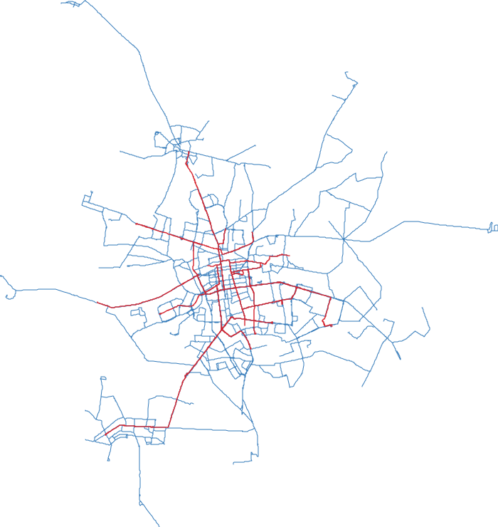
Łódź
ZDiT Łódź · MPK Łódź
126 lines · 2,416 stops · 3,712 km — the city and its county, the regional trams to Pabianice and Zgierz included
104 bus
22 tram
Open the map →

Grodzisk Mazowiecki Region
GPA — Grodziskie Przewozy Autobusowe · WKD
66 lines · 1,781 stops · a county network, no shapes and no direction_id
65 bus
1 railway
Open the map →
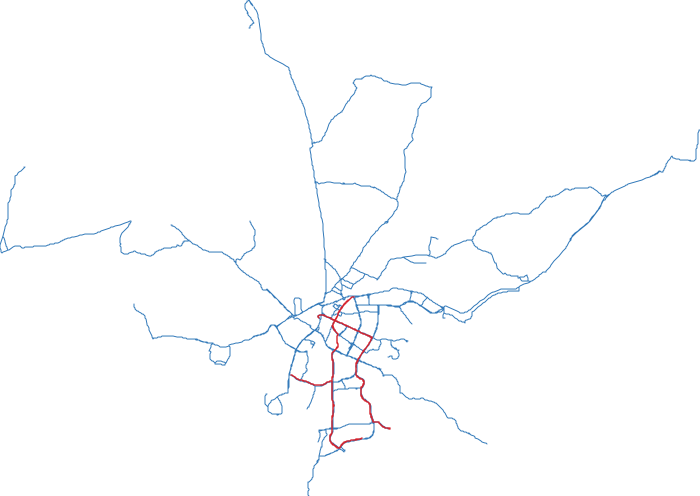
Olsztyn
ZDZiT Olsztyn
38 lines · 317 stops · 917 km — the first new tram system built in Poland since the war, and a feed with no shapes at all
33 bus
5 tram
Open the map →
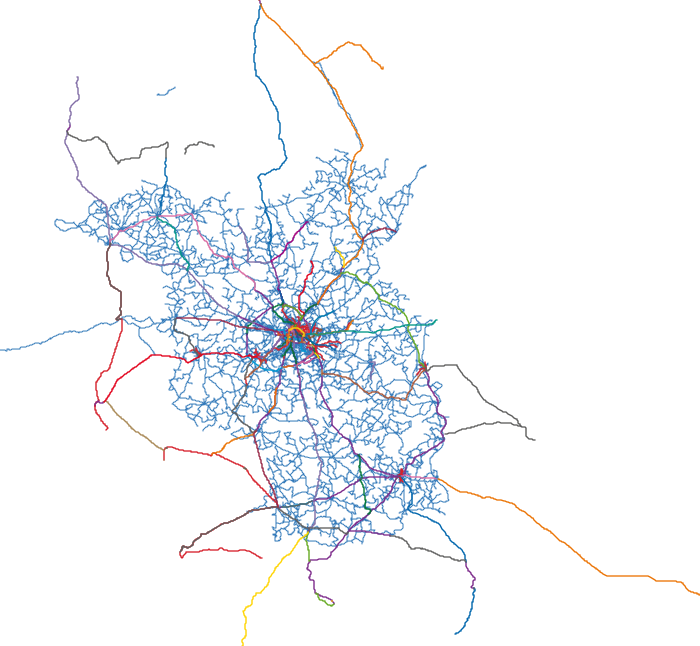
Berlin
BVG · S-Bahn Berlin · ViP Potsdam · the VBB Umland operators
416 lines · 4,738 stops · 13,710 km — Berlin, Potsdam and the Brandenburg ring, cut out of the whole Verbund feed
359 bus\n 31 tram\n 10 U-Bahn\n 16 S-Bahn
Open the map →

Vienna
Wiener Linien · Badner Bahn (Wiener Lokalbahnen)
189 lines · 4,196 stops · the sharpest match of the family
154 bus
30 tram
5 U-Bahn
Open the map →

Budapest
BKK — Budapesti Közlekedési Központ · MÁV-HÉV
376 lines · 5,518 stops · 8,427 km — incl. the Fogaskerékű and the HÉV out to Ráckeve
303 bus
17 trolleybus
47 tram
4 metro
5 HÉV
Open the map →

Bucharest & Ilfov
TPBI — STB · Metrorex · Ilfov operators
201 lines · 4,264 stops
166 bus
17 trolleybus
13 tram
5 metro
Open the map →

Cluj-Napoca
Compania de Transport Public Cluj-Napoca (CTP)
107 lines · 767 stops · buses, trolleybuses and four tram lines
89 bus
14 trolleybus
4 tram
Open the map →

Timișoara
Societatea Metropolitană de Transport Timișoara (SMTT / STPT)
56 lines · 821 stops · the Bega vaporetto left out on purpose
42 bus
8 trolleybus
6 tram
Open the map →

Oradea
Oradea Transport Local (OTL)
57 lines · 556 stops · RoHu runs across the border to Debrecen
50 bus
7 tram
Open the map →

Brașov
Regia Autonomă de Transport Brașov (RATBV)
84 lines · 832 stops · timetables from a community GTFS, not the operator
75 bus
9 trolleybus
Open the map →

Iași
Societatea de Transport Public Iași (SCTP)
53 lines · 703 stops · trams 1 and 13 circle Copou
44 bus
9 tram
Open the map →

Constanța
CT BUS S.A. Constanța
20 lines · 369 stops · the smallest network of the family
20 bus
Open the map →
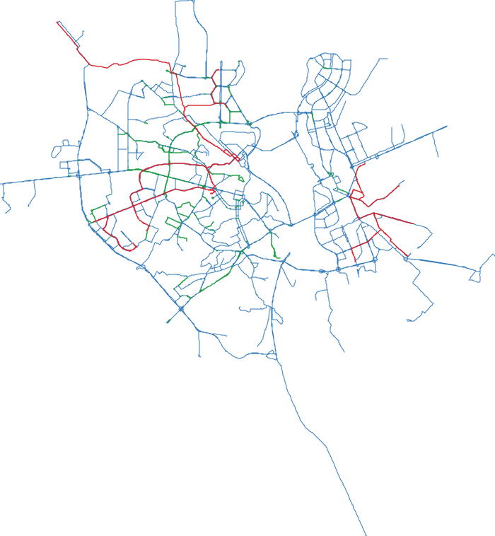
Kyiv
Kyivpastrans · the city open-data portal
155 lines · 1,374 poles · 3,419 km — the whole surface network; three modes all numbered from 1, and no metro in the feed
96 bus
42 trolleybus
17 tram
Open the map →
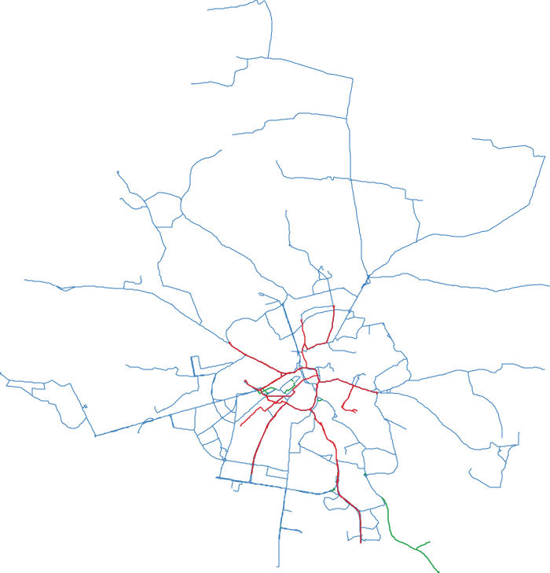
Lviv
ЛКП Львівелектротранс · seven private bus operators
72 lines · 1,051 stops · 2,090 km — the trolleybuses come filed as buses and are given back their green
55 bus
9 trolleybus
8 tram
Open the map →

Belgrade
Београд Плус (Beograd Plus)
241 lines · 3,329 stops · street names in Cyrillic and Latin
224 bus
6 trolleybus
11 tram
Open the map →
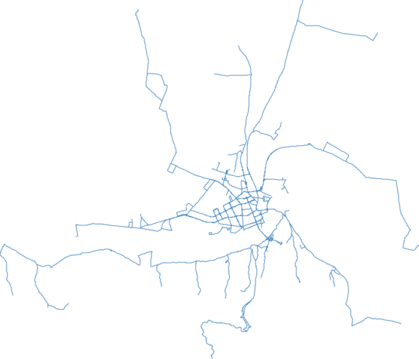
Novi Sad
JGSP Novi Sad
99 lines · 989 stops · 3,318 km — the city grid and the villages, out to Beočin, Sremski Karlovci and Žabalj
99 bus
Open the map →
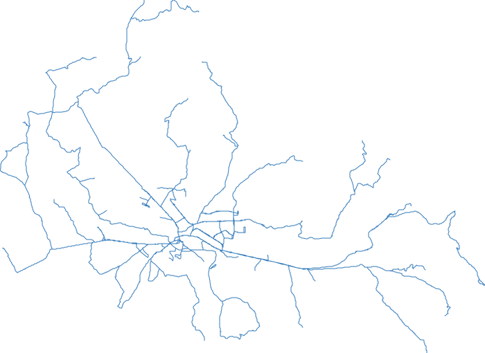
Niš
JGSP Niš-Ekspres
62 lines · 702 stops · 1,647 km — the Nišava valley; the feed keeps each direction in its own route row
62 bus
Open the map →
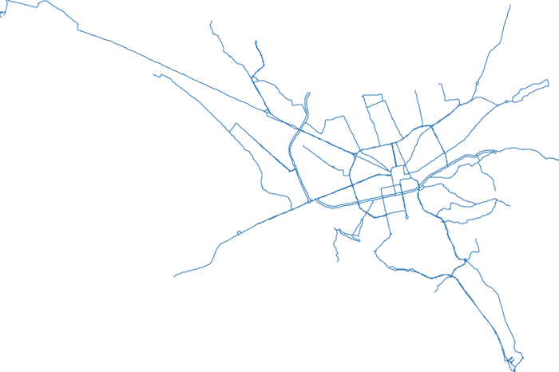
Tirana
Bashkia e Tiranës
27 lines · 297 stops · 400 km — the whole public network of the city, which has no rail of any kind
27 bus
Open the map →

Sofia
Център за градска мобилност (CGM)
140 lines · 2,211 stops · every mode numbered from 1
100 bus
17 trolleybus
19 tram
4 metro
Open the map →
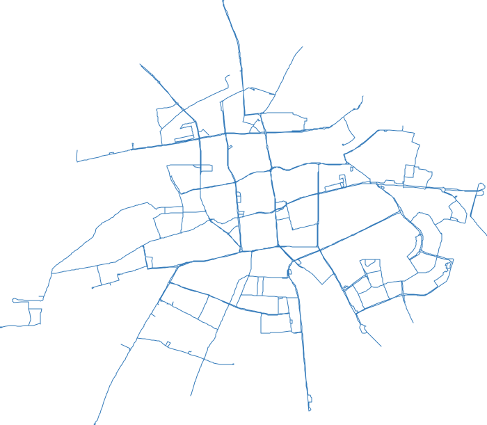
Plovdiv
Four operators under the city contract
29 lines · 472 stops · 992 km — the family’s plainest map: one mode, one colour, one graph
29 bus
Open the map →
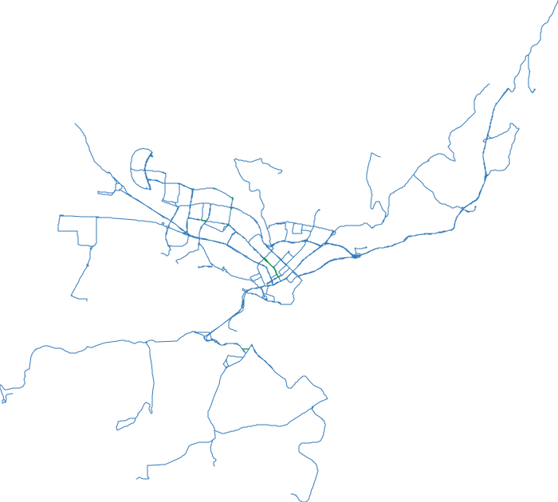
Varna
Градски транспорт Варна
32 lines · 394 stops · 1,761 km — 606 shouted stop names rewritten through an OpenStreetMap dictionary
29 bus
3 trolleybus
Open the map →

Istanbul
İETT · Metro İstanbul · Marmaray (TCDD)
813 lines · 13,788 stops · the largest bus network of the family
787 bus
8 Metrobüs
3 tram
15 metro & Marmaray
Open the map →

Athens
OASA — OSY buses + STASY metro & tram
288 lines · 7,159 stops
263 bus
20 trolleybus
3 metro
2 tram
Open the map →

Thessaloniki
OASTH + Thessaloniki Metro
228 lines · 3,666 stops
227 bus
1 metro
Open the map →
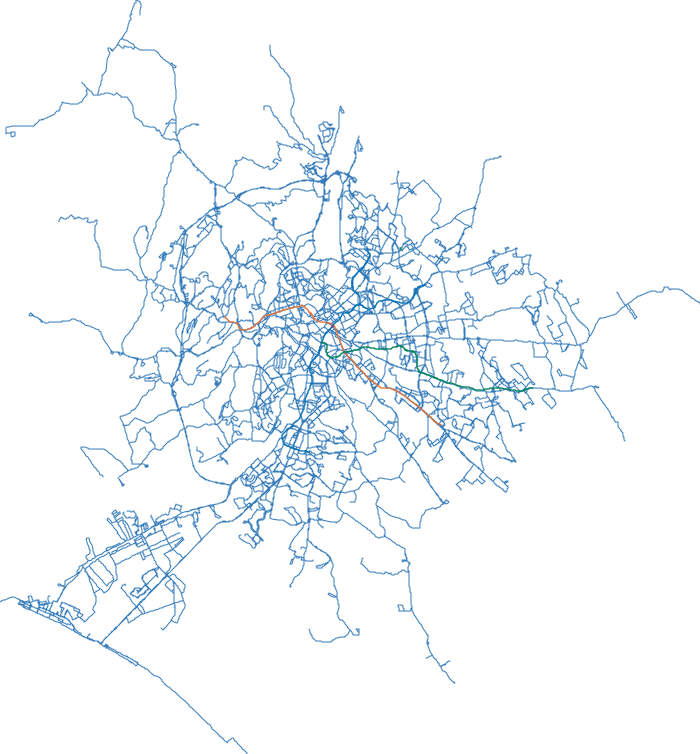
Rome
Atac · TROIANI · BIS · ATR Mobility · TUSCIA
427 lines · 5,244 stops · 9,349 km — Atac plus the provincial operators; the trams and the ex-concession railways are not in this feed
423 bus
4 metro
Open the map →

Naples
ANM · EAV (Circumvesuviana, Cumana, Circumflegrea)
120 lines · 2,491 stops · two operators, metro, funiculars and narrow-gauge rail
96 bus
4 trolleybus
3 tram
17 metro, funicular & EAV
Open the map →

Paris
Île-de-France Mobilités — RATP and the Paris-area operators
430 lines · 12,628 stops · 9,424 km — Paris and the petite couronne, the whole métro
399 bus
15 tram
16 métro
Open the map →
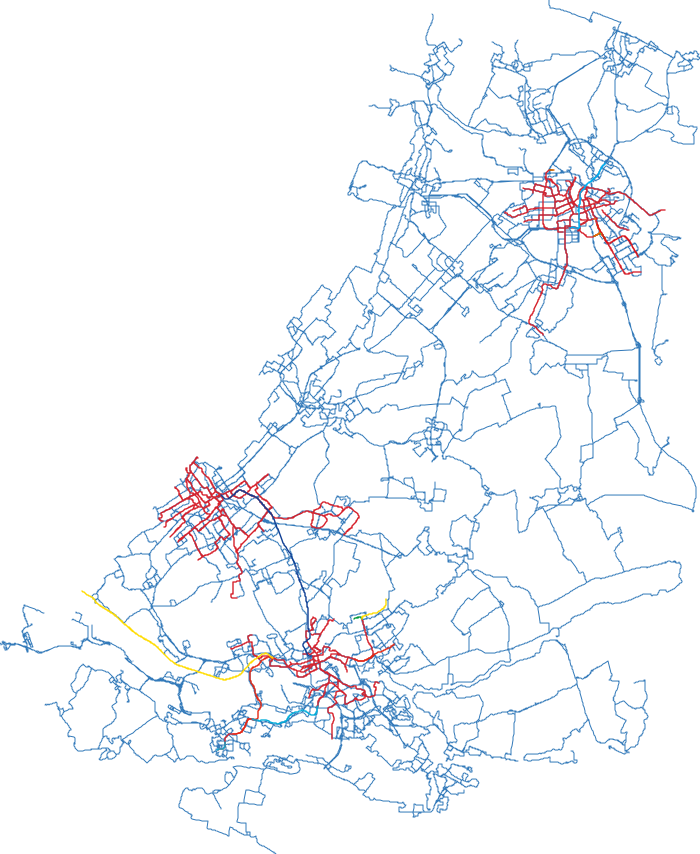
Randstad — Amsterdam · Den Haag · Rotterdam
GVB · HTM · RET · Connexxion · Qbuzz · EBS · MeerPlus · Transdev · U-OV
459 lines · 5,129 stops · 14,478 km — five cities in one frame: three separate tram networks and two unrelated metros
404 bus\n 45 tram\n 10 metro
Open the map →

Copenhagen
Movia · Metroselskabet · DSB S-tog · Hovedstadens Letbane
96 lines · 3,531 stops · 3,305 km — all seven S-tog lines
84 bus
1 letbane
4 metro
7 S-tog
Open the map →
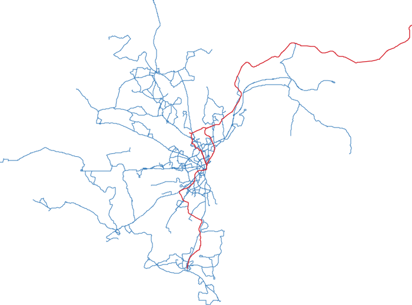
Aarhus
Midttrafik · Aarhus Letbane
57 lines · 1,206 stops · 2,798 km — cut out of the national Rejseplanen feed, with both letbane lines whole to Grenaa and Odder
55 bus
2 letbane
Open the map →
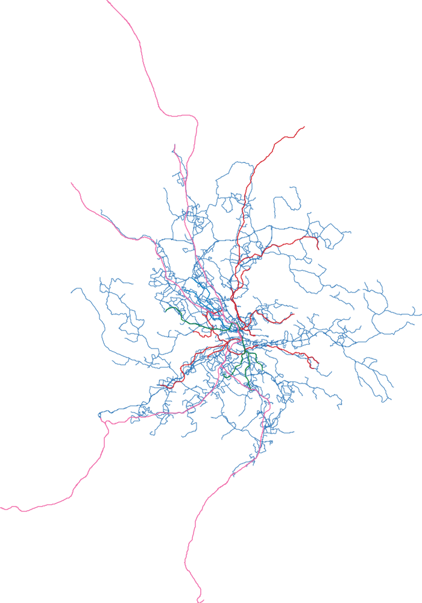
Stockholm
SL — Storstockholms Lokaltrafik
406 lines · 3,027 stops · 12,431 km — the six lokalbanor, the tunnelbana and the pendeltåg to Uppsala
379 bus\n 15 lokalbanor\n 7 tunnelbana\n 5 pendeltåg
Open the map →
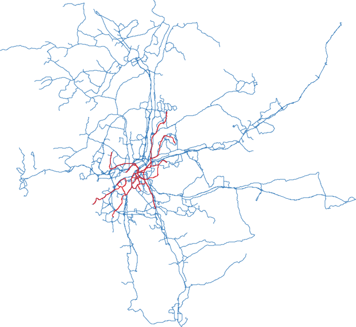
Göteborg
Västtrafik
207 lines · 1,737 stops · 5,689 km — Sweden's largest tram network, and four town networks that all number from 1
192 bus\n 15 tram
Open the map →
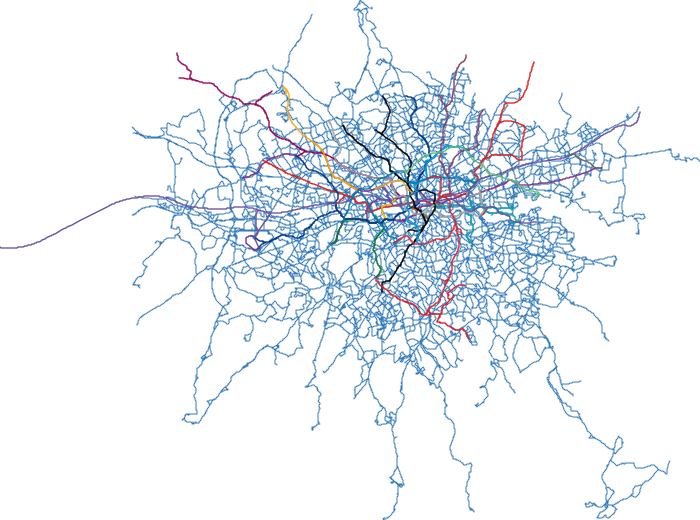
London
TfL · London Underground · DLR · London Overground · Elizabeth line
767 lines · 22,863 stops · 6,238 km of streets and tracks — every TfL-contracted bus and the whole railway family, every Underground branch drawn
746 bus
11 Underground
6 Overground
DLR · Elizabeth · cable car
Open the map →

Cairo
Transport for Cairo — CTA · Mwasalat Misr · paratransit · Metro
995 lines · 2,983 stops · the densest network of the family
354 bus
639 paratransit
2 metro
Open the map →
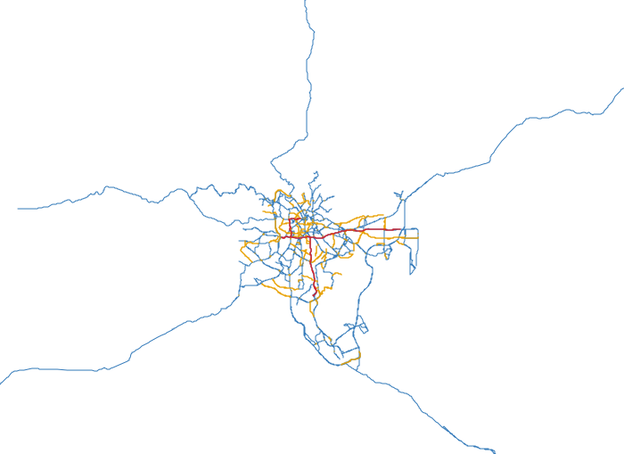
Addis Ababa
Anbessa City Bus · Sheger Mass Transport · the minibus taxi associations · Light Rail
447 lines · 2,234 stops · 9,465 km — surveyed into OpenStreetMap by AddisMapTransit; the minibus network drawn beside the formal one
194 bus
251 minibus taxi
2 light rail
Open the map →
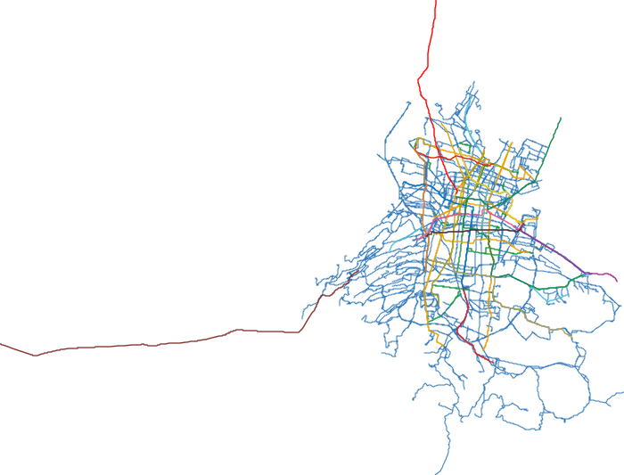
Mexico City
Corredores concesionados · RTP · STE Trolebús · Metrobús · Metro · Tren Ligero · Cablebús · Suburbano
289 lines · 10,630 stops · 8,422 km — every operator on one sheet; the twelve trolleybus lines picked out of data that files eleven of them as buses
251 bus
12 trolleybus
8 Metrobús
18 rail & gondola
Open the map →
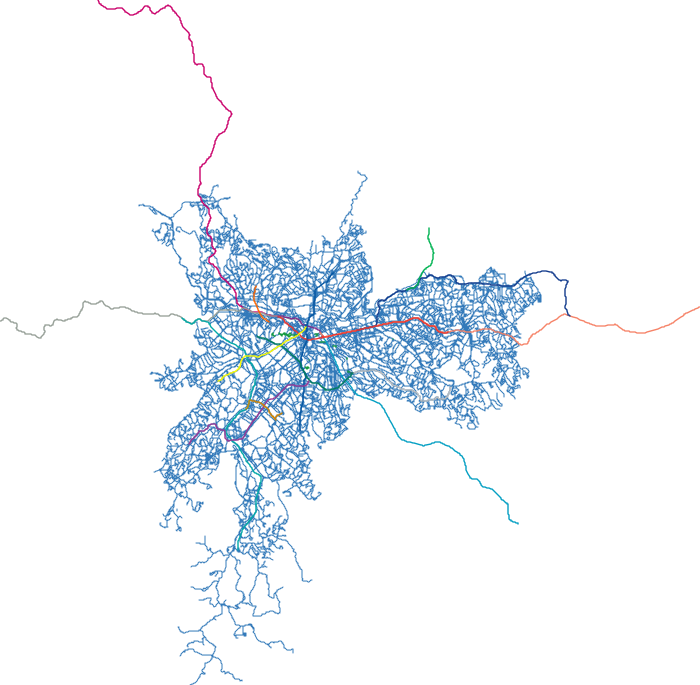
São Paulo
SPTrans · Metrô · CPTM
1,325 lines · 22,187 stops · 34,966 km — the largest sheet here: the whole SPTrans network, its trolleybus lines and both rail operators
1,300 bus
9 trolleybus
16 Metrô & CPTM
Open the map →

Rio de Janeiro
Secretaria Municipal de Transportes (SMTR) · MOBI-Rio
498 lines · 7,519 stops · 23,980 km — the tightest match of the family
468 bus
30 BRT
Open the map →

Buenos Aires
Colectivos AMBA · SBASE · Trenes Argentinos
302 lines · 43,585 stops · 53,506 km — the largest of the family, every ramal drawn
288 colectivos
6 subte
2 premetro
6 trenes
Open the map →